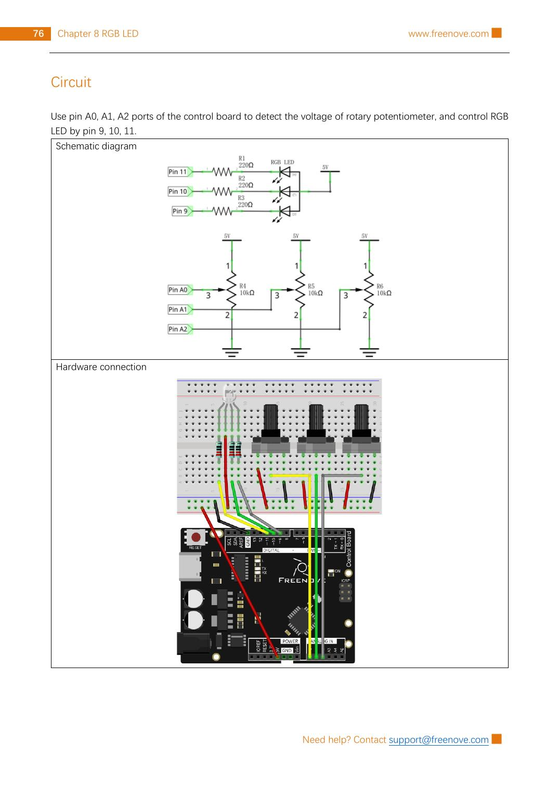

Wire the Freenove kit’s common-anode RGB LED, read three potentiometers on A0–A2, and use PWM pins 11, 10, and 9 to mix a colour you choose.
Gather the parts
Uno-compatible board and USB cable
Breadboard
1 common-anode RGB LED from the Freenove kit
3 rotary potentiometers
3 resistors marked 220 Ω
15 male-to-male jumper wires
Important: use only the board’s 5 V, GND, A0–A2, and pins 9–11 connections shown here. This project is for the USB-powered board only: never connect the breadboard to wall power, a battery pack, or a higher-voltage circuit.
Build it, one check at a time
Step 1 — Read the source circuit
Keep USB unplugged. This unchanged reference page from the permitted Freenove tutorial shows the circuit and breadboard layout. It uses three 10 kΩ potentiometers: their outer legs go to 5 V and GND, and their centre (wiper) legs go to A0, A1, and A2. The RGB LED has one 220 Ω current-limiting resistor in each colour path.

Reference image: Freenove Ultimate Starter Kit, Tutorial.pdf, Chapter 8, Project 8.1, PDF page 80 / printed page 76. Rasterized unchanged from the permitted source pack under CC BY-NC-SA 3.0.
Step 2 — Identify the LED before wiring it
An RGB LED has four legs. This Freenove circuit is for a common-anode part: its longest common leg connects to 5 V. The remaining three legs are the red, green, and blue channels. Put all four legs in separate breadboard rows.
Stop if your part is different. Some RGB LEDs are common-cathode, which need a different circuit and code logic. Do not use this lesson’s 5 V common connection for a common-cathode LED. Use the diagram and your component’s documentation to identify each colour leg; never assume the colours are in the same order on every RGB LED.
Step 3 — Wire the three colour channels
Connect the RGB LED’s long common leg to 5 V. For each remaining colour leg, add its own 220 Ω resistor in series before the Arduino pin. Follow the reference layout exactly: pin 11 → 220 Ω → red channel, pin 10 → 220 Ω → green channel, and pin 9 → 220 Ω → blue channel. The resistors limit current, so do not omit or share them.
Trace each route slowly. No colour leg should connect straight to an Arduino pin, and none of the four RGB LED legs should share a breadboard row.
Step 4 — Add the three control knobs
For each potentiometer, connect one outside leg to 5 V, the other outside leg to GND, and its middle leg to the Arduino input. Connect the inputs in order: first knob to A0, second to A1, and third to A2. Turning a knob changes the voltage on its middle leg. If a knob turns the opposite direction from your expectation, that is okay: its two outside wires may be swapped while USB is unplugged.
Step 5 — Upload the colour mixer
Reconnect USB, select your Uno-compatible board and serial port in Arduino IDE, then upload this original sketch.
const int redPin = 11;
const int greenPin = 10;
const int bluePin = 9;
void setup() {
pinMode(redPin, OUTPUT);
pinMode(greenPin, OUTPUT);
pinMode(bluePin, OUTPUT);
}
void loop() {
int red = map(analogRead(A0), 0, 1023, 0, 255);
int green = map(analogRead(A1), 0, 1023, 0, 255);
int blue = map(analogRead(A2), 0, 1023, 0, 255);
analogWrite(redPin, 255 - red);
analogWrite(greenPin, 255 - green);
analogWrite(bluePin, 255 - blue);
delay(20);
}
What the code means: each analogRead changes a knob voltage into 0–1023, then map makes a PWM-sized number from 0–255. The subtract-from-255 step is deliberate: this common-anode LED shines when a colour pin is low, so it reverses normal PWM intuition. Turn one knob at a time, then combine two or three. You can try red + green for yellow, red + blue for magenta, and all three for a pale white.
If nothing lights, unplug USB and recheck the long common leg is on 5 V, every colour path has its own 220 Ω resistor, and the pins are 11, 10, and 9. If a colour is unexpected, confirm that channel’s leg against the source layout before changing code.
Tiny challenge
Pick one target colour before turning the knobs. Which channels need light for turquoise? Can you make it, then make it less bright by turning all three knobs down a little? Describe why a common-anode LED needs the reversed PWM numbers in this sketch.
The unchanged reference image and upstream material are from Freenove’s Ultimate Starter Kit and are used under CC BY-NC-SA 3.0. Attribution, noncommercial, and ShareAlike requirements apply.